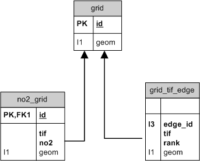

Exposure
The exposure schema is used to model NO2 on a grid using the Traffic Model traffic data transferred to the OSM road network. For more information read here

Grid geometry
This table holds the 100m grid for the whole of Auckland. A new grid table, eg. grid_10m, can be created for a specific area using the create_grid function. This table is meant to hold the default implementation of the NO2 model. The grid is only created for areas that overlap the ATM zones.
grid:
Polygon version of a 100m grid for Auckland.
- id (SERIAL): cell id allocated by database
- geom (POLYGON): cell geometry
Traffic Impact Factor Network Edges
The traffic impact factor (TIF) is an indicator of the importance of a network edge's traffic flow contribution to exposure intensity at x distance from edge. TIF is calculated by choosing a grid cell (center of cell), choosing the x closest number of cells and applying a distance based dispersion function to their traffic volume.
grid_tif_edge:
- grid_id (INTEGER): the cell id of the grid for which the TIF is valid
- edge_id (INTEGER): the network edge with Traffic Model data
- tif (NUMERIC): the value of the edge's TIF
- rank (INTEGER): how close the edge was to center of cell
- geom (LINESTRING): the edge geometry
Modelled NO2
NO2 is calculated for a cell using the linear relationship NO2 has with the TIF value aggregated from all network edges that contributed traffic volume to cell.
no2_grid:
- id (INTEGER): actually the grid id
- tif (NUMERIC): total TIF for cell
- no2 (NUMERIC): NO2 calculated from TIF
- geom (POLYGON): grid geometry
{kind=link}